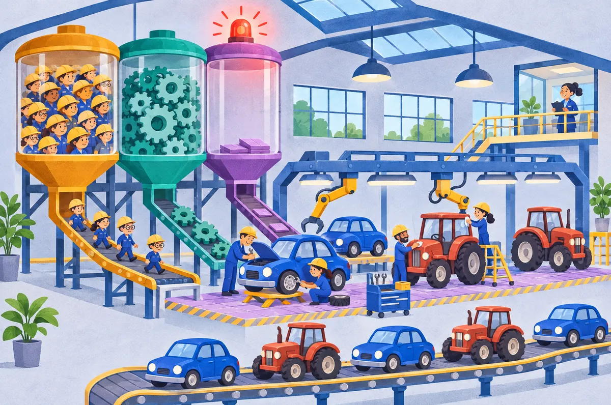
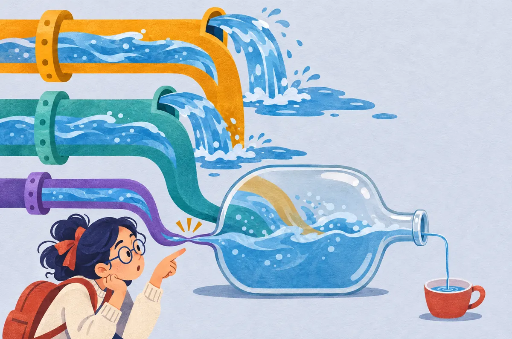

שלב 0
השאלה בשפה של בני אדם
יש מפעל שבונה שני דברים: מכוניות (נקרא להן X) וטרקטורים (Y). כדי לבנות, המפעל לוקח משלוש "קופסאות":
עובדים1,600 שעותמכונית לוקחת 200 · טרקטור 100
מכונות80 שעותמכונית לוקחת 5 · טרקטור 10
מקום90 מ״רמכונית לוקחת 10 · טרקטור 10

הכלל היחידהקופסה שנגמרת ראשונה היא "הבוס". היא קובעת כמה אפשר לבנות. כל השאר נשאר עם עודף שלא משתמשים בו.
השאלה מבקשת שלושה דברים:
- סעיף 1: לבנות את עקומת התמורה, כלומר כל הצירופים הכי טובים של מכוניות וטרקטורים.
- סעיף 2: למצוא את "המחיר" של טרקטור, כלומר על כמה מכוניות מוותרים כדי לבנות עוד טרקטור.
- סעיף 3: לבדוק מה משתנה כשמוסיפים מקום (100 מ״ר במקום 90).
